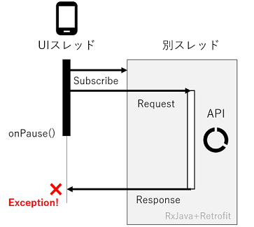
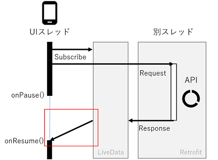

年末年始アプリ開発その2
2018-01-07 17:45:44 +0900 JST
Categories: Android
さて前日(?)は設計が終わったところで、ようやく開発スタートです。
モチベーションの一つとして Android最新技術の勉強をするため を掲げていましたので、今回習得したい技術選定を行いました。
- CoordinatorLayout
- Android Architecture Components
CoordinatorLayout
CoordinatorLayoutはみんな大好きSupport Libraryファミリーのdesign libraryに入っている イイ感じにコーディネートしてくれるLayout です。
Mastering the Coordinator Layoutより、

CoodinatorLayout自体は結構前から登場していたのですが、あまりにもよくわからないライブラリだったためしばらく敬遠していました。
しかしこれこそAndroidアプリ！(たぶんGoogle公式アプリでよく使われているからかと)っぽい動きをするぐらいカッコよいので、今回挑戦してみることにしました。
ただ、まずはとりあえずデータをとってきて画面に表示させることが大事ですので、今回はもう一つのArchitecture Componentsを先に挑戦しました。
Android Architecture Components
これもGoogle公式のライブラリなのですが、これが非常に面白いライブラリとなっています。
なんと今までのAndroidのライフサイクルを見直してより効率的なライフサイクルを提供するライブラリとなっています。
Android Architecture Components
いくつかのコンポーネントの組み合わせからなっていますが、今回はその中の LiveData(Lifecycle) を使ってみます。
LiveData
LiveDataはAndroidのライフサイクルに合わせてデータを伝搬させるライブラリです。これまではよくRxJavaが使われていましたが、RxJavaと比べて ライフサイクル が考慮されているという点が面白いです。
よくあるのがHTTP通信の時で、データが受信したころにはActivityやFragmentがいなくなっており、その後UIを操作してアプリが落ちてしまうといったことが稀によくありました。

LiveDataはライフサイクルを考慮していますので、onPause時やActivity、Fragmentがいない場合はコールバックを実行せず、有効になった時に自動的に呼ばれる仕組みになっています。そのため開発者は安心してUIを操作するコードを書くことができます。

このあとサンプルコードを紹介しますが、赤枠は自動的に行われるので、コード上ではあくまでsubscribeしたときのクロージャー内にUI処理を書くだけでOKです。
サンプルコード
LiveDataとRetrofitの組み合わせサンプルがあまりなかったので紹介します。はてなブックマークのブコメ一覧を取得するAPIを叩いてみます。
- Android Studio 3.0.1
- Gradle 4.1
- kotlin 1.2.10
- Retrofit 2.3.0
まずはライブラリをインポートします。Gradle4でcompileからimplementationに変わったようです。
apply plugin: 'kotlin-kapt'
dependencies {
implementation 'com.squareup.retrofit2:retrofit:2.3.0'
implementation 'com.squareup.retrofit2:converter-moshi:2.3.0' // json converter
implementation 'android.arch.lifecycle:runtime:1.0.3'
kapt 'android.arch.lifecycle:compiler:1.0.0'
}Gradle4でcompileからimplementationに変わったようです。何故。
次にLiveDataとRetrofitを橋渡しするクラスを用意します。
data class ResponseBody<T>(
var body: T?,
var error: ResponseError?
)
data class ResponseError(
var statusCode: Int,
var message: String
)
class RetrofitLiveData<T>(private val call: Call<T>) : LiveData<ResponseBody<T>>(), Callback<T> {
override fun onActive() {
if (!call.isCanceled && !call.isExecuted) call.enqueue(this)
}
override fun onFailure(call: Call<T>?, t: Throwable?) {
// not implemented
}
override fun onResponse(call: Call<T>?, response: Response<T>?) {
if (response != null) {
if (response.isSuccessful) {
value = ResponseBody(response.body(), null)
} else {
val err = ResponseError(response.code(), response.message())
value = ResponseBody(null, err)
}
}
}
fun cancel() = if(!call.isCanceled) call.cancel() else Unit
}実際に橋渡しをしているのはRetrofitLiveDataのonResponseメソッドです。これはLiveDataを継承したクラスで、用意されているvalueに値をセットすることでobserverに伝搬することができます。
ResponseBodyというクラスを用意していますが、これはLiveDataの仕様でsubscribeしたときのコールバック関数が1つしかないためです。その1つのコールバックに成功したときと失敗したときの両方のレスポンスが受け取れるようにしています。
次にRetrofitでAPIを叩く準備をします。
interface Api {
@GET("/entry/jsonlite/")
fun getComments(@Query("url") url: String): Call<CommentResponse>
}
object ApiClient {
val hatena: Api
get() {
val retrofit = Retrofit.Builder()
.baseUrl("http://b.hatena.ne.jp")
.client(OkHttpClient())
.addConverterFactory(MoshiConverterFactory.create())
.build()
return retrofit.create(Api::class.java)
}
}コンバーターは不要です。
最後にActivityで呼び出します。
override fun onCreate(savedInstanceState: Bundle?) {
super.onCreate(savedInstanceState)
...
RetrofitLiveData(ApiClient.hatena.getComments("http://www.bunkakeihack.com/entry/2018/01/06/200800")).observe(this, Observer {
// it.body
// it.error
})
}RetrofitLiveDataの中でRetrofitのAPI通信を実行します。その結果はobserveメソッド内のコールバックで受け取ります。
このコールバックの中が上の図でいう赤枠の部分にあたります。例えRetrofitの処理が終わったとしても、onPause時はこのコールバックが実行されることはありません。
なのでこの中で安心してTextViewにsetTextができます。
とりあえずこれで安全なAPI通信ができるようになりました。
LiveData所感
よさそうなところ
- API通信でActivity死んでる系例外を踏まなくなれるので嬉しい
- RxJavaいらなくなった
- Retrofitとの組み合わせはそんなに複雑にならなさそう(ちょっとしたラッパークラスを作る必要があるけど、ライブラリ化して隠蔽すればすっきりしそう)
いまいちそうなところ
- RxJavaのように途中でデータを加工して最後にsubscribeすることができない
- RxJavaでいうonErrorに該当するものがない
2つのストリームを合体させたり、ストリームを途中で加工する必要がある場合はまだまだRxJavaを使ったほうがよさそうです。